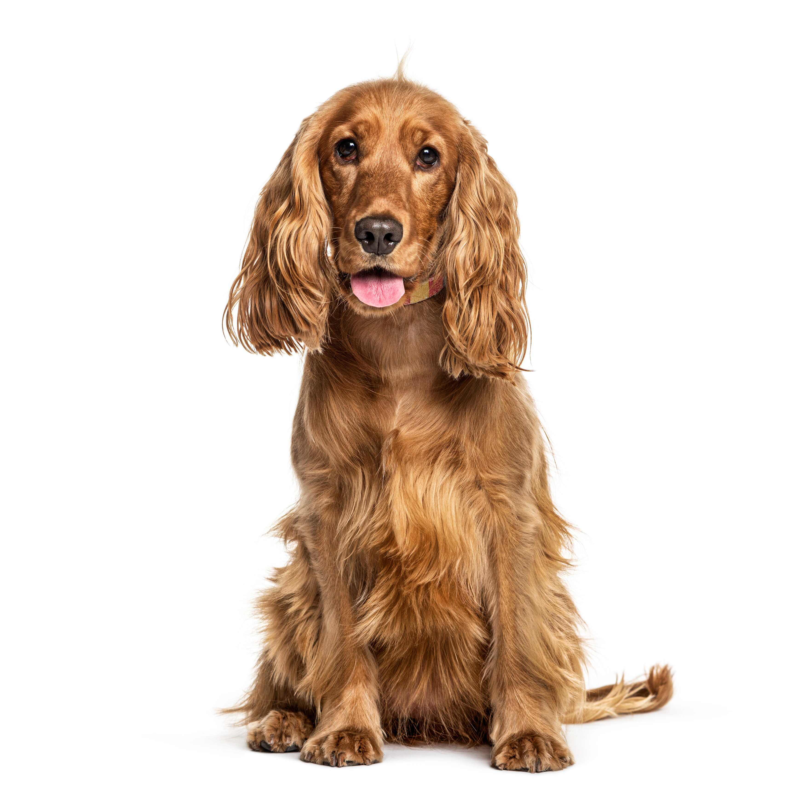

TYPES OF DOGS
GERMAN SHEPHERD
The German Shepherd, also known in Britain as an Alsatian,
is a German breed of working dog of medium to large size.
The breed was developed by Max von Stephanitz using various
traditional German herding dogs from 1899. It was originally
bred as a herding dog, for herding sheep.

LABRADOR RETRIEVER
The Labrador Retriever is one of the most popular dog breeds
in the United States. They are known for their friendly and
outgoing personality, as well as their intelligence and
trainability. Labs are often used as guide dogs and in
search-and-rescue operations.

HUSKY
Huskies are medium-sized working dogs known for their wolf-like
appearance and striking blue or multicolored eyes. They are
energetic and resilient, bred originally as sled dogs in cold
climates. Huskies are friendly, outgoing, and good with families.

GOLDEN RETRIEVER
Golden Retrievers are friendly, intelligent, and devoted dogs
known for their golden coat. They are one of the most popular
dog breeds due to their kind temperament and ease of training.
Goldens are often employed as therapy dogs and in search-and-rescue.

COCKER SPANIEL
Cocker Spaniels are known for their long, floppy ears and gentle,
affectionate nature. They are playful and reliable, making them
great family pets. Originally bred as hunting dogs, they have a
strong sense of smell and a love for exploring.
